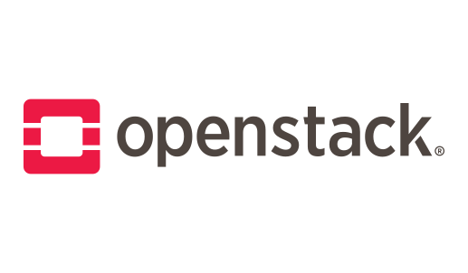

Cloud, Edge & AI Infrastructure
Cloud-native architecture, OpenStack, Kubernetes, Kubeflow, resource management and DevOps workflows.
I am a Researcher and Adjunct Lecturer at the University of West Attica, working across cloud and distributed computing, cybersecurity, blockchain and next-generation networks.
I combine architectural research with hands-on engineering: from private clouds and Kubernetes research platforms to decentralized trust mechanisms and AI-enabled network automation. I hold a PhD in Next Generation Networks and teach at university level.
What I work on
Cloud-native architecture, OpenStack, Kubernetes, Kubeflow, resource management and DevOps workflows.
Zero Trust, decentralized identity, trust management, blockchain security, oracles and zero-knowledge proofs.
Zero-Touch management, resilient SDN/NFV and AI-assisted automation for 5G/6G systems.
Decentralized adaptive trust for Zero-Touch Networks, trustworthy AI agents, and Kubernetes-based Hyperledger Besu infrastructure for digital-trust experiments.
Selected engineering record

Designed and implemented an on-premises cloud of more than 10 servers for European research projects.
OpenStack · Linux · NetworkingBuilt reusable testbeds, Kubeflow infrastructure for AI workloads and persistent blockchain environments.
Kubernetes · Rancher · KubeflowDeployed Quorum and Hyperledger Besu networks with QBFT for identity, trust and access-control research.
Besu · Quorum · QBFT · SolidityDeveloped VLAB for customized student lab instances and contributed to the M.U.St Web3 credential ecosystem.
Cloud education · Web3 · AutomationEvidence in practice
10+ servers · European research infrastructure
Provide dependable, locally controlled compute capacity for European projects with different service and experimentation requirements.
Designed and implemented the on-premises OpenStack environment, including controller and compute services, networking and Ansible-assisted deployment.
A reusable cloud of more than 10 servers supporting the STORM and TRILLION project services and further laboratory experimentation.
OpenStack · Linux · Ansible · Virtual networking
4 blockchain nodes · QBFT · Full observability
Create a persistent and observable environment for repeatable experiments in decentralized identity, trust and access control.
Built the Kubernetes platform and deployed three validators plus one RPC node running Hyperledger Besu with QBFT consensus, persistent volumes and application access.
A monitored research platform with Prometheus and Grafana, suitable for smart-contract development, benchmarking and comparative trust-management experiments.
Kubernetes · Besu · QBFT · Solidity · Hardhat · Prometheus · Grafana
Software Engineer & Task Leader · Erasmus+
Enable adult learners to hold and demonstrate trustworthy, portable microcredentials across educational environments.
Lead the technical task and contribute to the architecture and development of the blockchain verification layer, connecting microcredentials with decentralized identity concepts.
An evolving platform design combining verifiable credentials, soulbound tokens and privacy-preserving verification for adult learning.
DIDs · Verifiable Credentials · SBTs · Blockchain · Moodle
Funded research
Software Engineer / Task Leader · HOU
A blockchain-based verification platform for trustworthy adult-learning microcredentials.
Researcher / Software Engineer · UniWA
Blockchain infrastructure supporting citizen participation in the energy transition of tourism islands.
Researcher / Software Engineer · UniWA
An augmented sensing network designed for adverse and infrastructure-less first-responder environments.
Network Engineer · UniWA
Studied and evaluated resilient ECoBox communication capabilities for emergency-response operations.
Cloud Computing Specialist · UniWA
Designed OpenStack infrastructure supporting services for the protection of cultural heritage.
Cloud Computing Specialist · UniWA
Delivered OpenStack infrastructure for trusted citizen–law-enforcement collaboration services.
Teaching & service
Head of Cloud Computing at CONSERT Laboratory; journal guest editor, reviewer and thesis supervisor.
Cloud: OpenStack · Kubernetes · Docker · Rancher · Kubeflow
Networks: SDN · NFV · 5G/6G · ZSM · Zero Trust
Blockchain: Hyperledger Besu · Quorum · EVM · Solidity · DIDs · ZKPs
Engineering: Python · Bash · Ansible · Git · Prometheus · Grafana
Credentials: NVIDIA-Certified Associate: AI in the Data Center · Google Project Management Professional Certificate
Selected scholarship
Electronics, 15(2), 266.
Handbook of Blockchain Technology, Edward Elgar Publishing.
Electronics, 13(19), 3887.
Get in touch